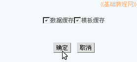

Discuz!论坛安装教程
作者：TeliuTe 来源：基础教程网
管理中心也叫后台，用来设置论坛的各个功能，下面我们来看一个练习；
1、论坛控制面板
1）登录论坛后，点右上角“管理中心”，进入论坛控制中心首页；
2）在上面的导航栏点“全局”，左边出来各个相关设置，每一项都有相应的说明；
3）UCenter的设置要细心，里面的地址要用ip地址或域名，否则其它机子不能访问UC中心，例如头像不能上传；
4）再点上边的版块，这里可以设定论坛包含哪些版区、版块，排列顺序等，记着要提交；
5）再点上边的“插件”，把“首页多格”安装好，然后打勾启用，也要记着提交；
6）再点上边的“工具”，在这里可以更新缓存，修改设置后要更新一下；

7）点左边侧栏里的“数据库”，可以备份和恢复论坛数据；
2、UCenter 中心
1）在管理中心导航栏右侧，点“UCenter”进入UCenter中心，这是网站的核心；
2）可以点左侧栏或右边的“菜单”，进行各项设置；
3）点侧栏中的“应用管理”，可以查看安装的应用，包括论坛、家园、门户等，应该都显示“通信成功”；
4）点侧栏中的“数据备份”，可以对UC中心进行备份，也可以对各个应用备份；
5）其他设置可以自己试着修改，改好以后更新一下缓存；
本节学习了论坛和UCenter的各项设置，如果你成功地完成了练习，请继续学习下一课内容；
本教程由86团学校TeliuTe制作|著作权所有
基础教程网：http://teliute.org/
美丽的校园……
转载和引用本站内容，请保留版权信息和本站链接。